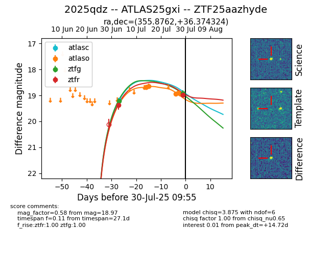

Target 2025qdz at 2025-07-30 09:55, see:
FINK: fink-portal.org/2025qdz
Lasair: lasair-ztf.lsst.ac.uk/objects/2025qdz
ALeRCE: alerce.online/object/2025qdz
TNS: wis-tns.org/object/2025qdz
YSE: ziggy.ucolick.org/yse/transient_detail/2025qdz
alt names
ZTF25aazhyde (ztf,fink)
2025qdz (tns,yse)
ATLAS25gxi (atlas)
coordinates:
equatorial (ra, dec) = (355.8762,+36.37432)
galactic (l, b) = (107.9521,-24.51349)
photometry
last atlasc=19.18, atlaso=18.94, ztfg=18.91, ztfr=18.97
1 atlasc, 5 atlaso, 2 ztfg, 2 ztfr detections
